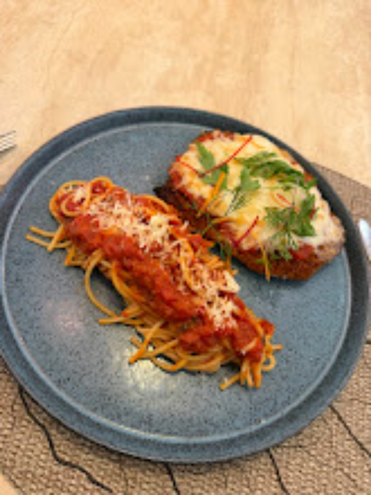
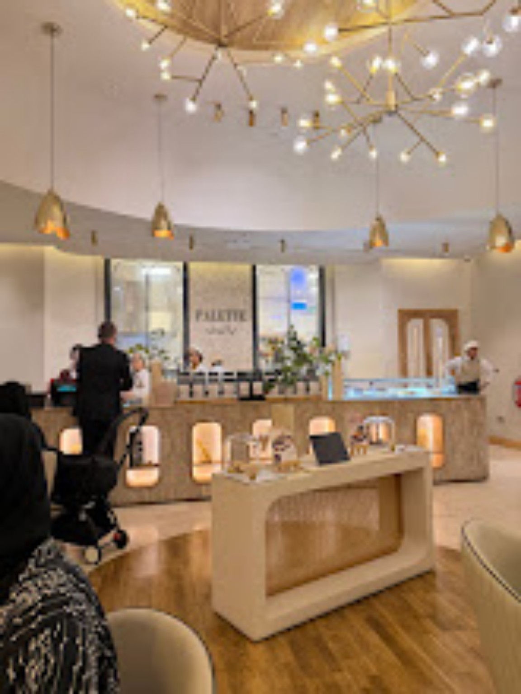
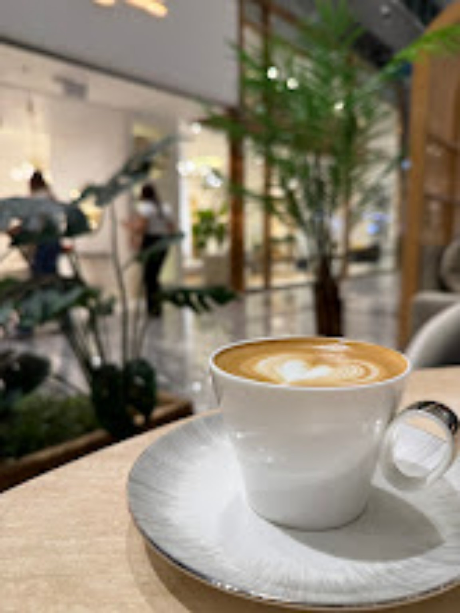
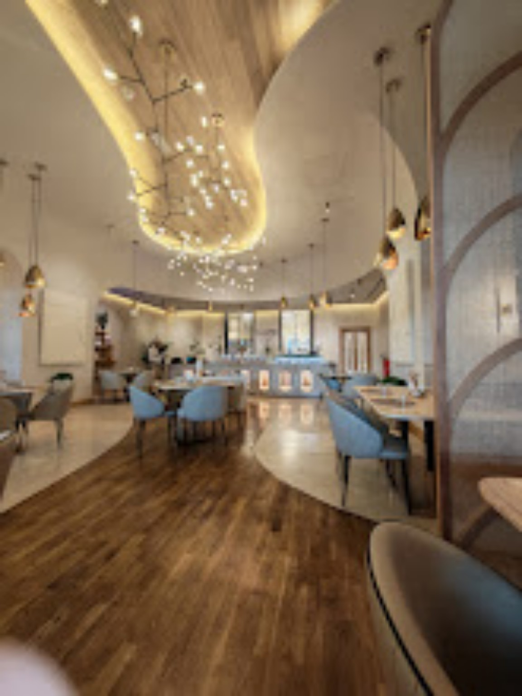
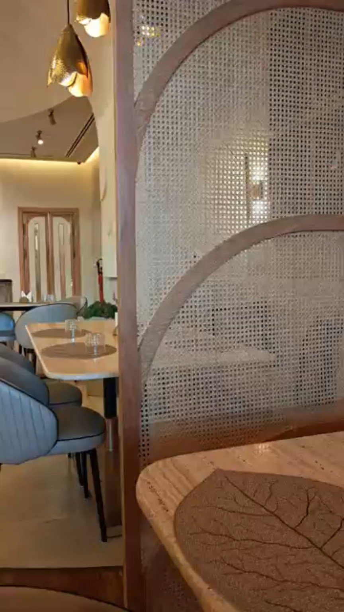
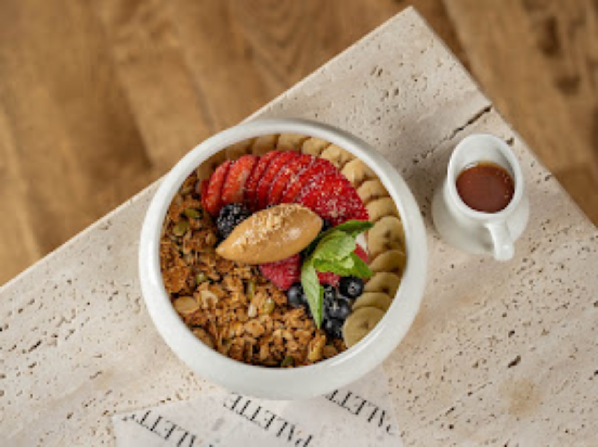

Pasta & toast
Featured plate from the supplied restaurant photography.
Palette Bistro's supplied photos show a calm interior built around warm timber, soft neutral finishes, greenery and sculptural lighting. This showcase gives those details room to breathe instead of compressing everything into one screen.
A dedicated video section uses the supplied restaurant video rather than leaving the homepage image-only.
Food photography is presented as a small editorial-style selection with image motion on hover and scroll.

Featured plate from the supplied restaurant photography.

Fresh, colorful presentation from the supplied images.
A plated finish styled for a relaxed dining experience.

The interior photography gives the brand a distinctive identity: natural wood, woven textures, soft seating and warm architectural lighting.
Large-format imagery gives the supplied photography more presence on desktop while remaining responsive on mobile.




.jpg)
Call, message on WhatsApp or open directions to find the restaurant at Doha Festival City.